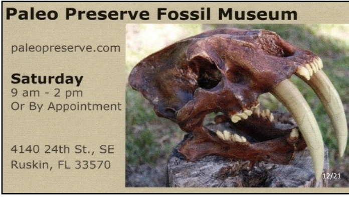

Announcements
Jan. 6, 2023Black Angus Dinosaurs by
Chris DeLorey
7PM IN-PERSON CLUB MEETING at the USF Behavioral Science Room #103
With a career in Natural History that spans 40 years, Chris Delory
has had the opportunity to work in the fields of conservation
education, paleontology, zoology, and public education. Starting his
career at Busch Gardens working in the zoo, he then transitioned
into classroom education, then back into the zoo field as Education
Director at the Brevard Zoo. Throughout all the careers Chris always
fostered a love of paleontology. Either fossil hunting with
friends, volunteering at Dinosaur National Monument, running
dinosaur expeditions out west for guests or playing the “Dr Dino”
character at zoos around the US and in Europe, paleontology remains
his favorite. In 2020 Chris decided to pursue his passion for
paleontology full time, with Dino Lab in Rockledge, Florida and
Dinosaur Expeditions to Montana and Wyoming.
Chris’ presentation for TBFC centers on the new Morrison Formation
site in Hyattville, Wyoming on the Paint Rock Black Angus
Ranch. Chris began working with the landowner in 2019 developing
a partnership to explore an area of his ranch that had turned up a
few bones and teeth over the years but nothing of significance.
Once he had spent some time on the ground exploring the site and
getting to know the geology, he realized the untapped potential. In
the presentation Chris will walk through this amazing dinosaur site
and show the full skeletons that are being found there and see how
amateurs working with professionals have really made a difference
to the discoveries.
Tampa Bay Fossil Chronicles
Hopefully you’ve noticed that TBFC has stepped up its game with the newsletter each month. In addition to all of our regular contributors, we’ve added two new recurring articles this season. “In Touch with Inverts” by Rob Carlson was added in September. Recently added, “Paleo Analysis” by Steve Vicari. Each month Steve will be discussing interesting prehistoric fauna and how they relate to extant species.
Please check out all of the articles in each issue. Only TBFC members receive the Chronicles, we don’t post it online or on Facebook.
Be sure to renew your Fossil Permits!
